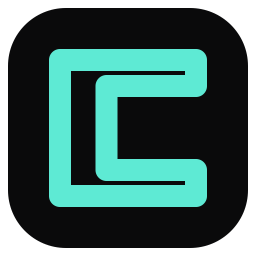

Your original concept, cleaned up: the black smudge is gone, the stroke is a single uniform mint weight (#5EEAD4) with rounded joins, and the mark is centered on the squircle. Still a "C with negative space."
#5EEAD4


 96
96